How the kit thinks
Do not make the question better. Make the place around it better.
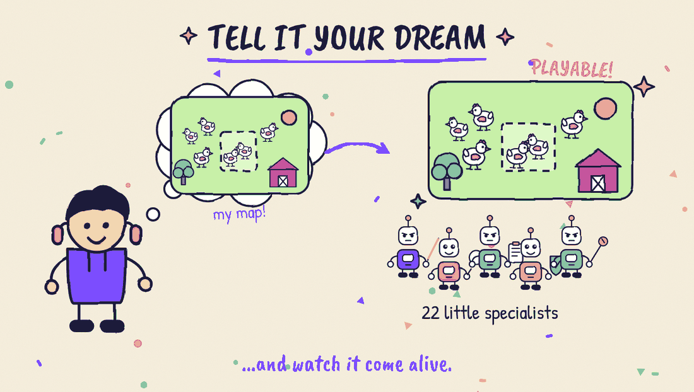
Hacking, in its first and best meaning, is making a system better, again and again, until it is quietly perfect. You find the small clever change that makes a whole family of problems disappear. Dream Bot Team is that, aimed at one question:
How can an AI build a real Fortnite map, and be trusted with it?
This page is the whole answer. You can read it in five minutes.
1. Four steps, from a wish to a workshop that learns
Most "self-driving" AI setups hide a secret: you are the loop. It writes, you read. It says "done", you check. It breaks something, you explain. Then you type again.
The kit moves that work, step by step, from you to the system. There are four steps, and each one exists because the one before it breaks in a predictable way.
| Step | What it gives | What breaks, so you need the next step |
|---|---|---|
| 1. Prompt | One try: you ask, it answers. You are the whole program | You are the bottleneck: you read, you check, you explain |
| 2. Loop | Try, check, retry. A test that can fail, written before the work; and feedback that says "I expected this, I saw that, this was already tried" | Every check is right, but the helper has nowhere safe to work and nothing to remember |
| 3. Harness | The system around the helper. Hands (every editor tool), memory (plan, notes and decisions are files, plus a second brain: one wiki shared by every project, with what worked, the lessons and the kit's own knowledge), walls (limits that hold even when the helper is wrong), shape (the work as a path with pieces side by side) and gates (passed work is frozen; you step in only where undo is impossible) | The same mistake comes back next week |
| 4. It learns | A mistake becomes a rule, on the right step. What worked is written once in the second brain. The same mistake never comes back | Nothing: this is the step that keeps the other three honest |
Underneath, a person quietly does three jobs that the system should do: give it a place to work (the harness), tell it if it was right (the loop) and decide what happens next (the graph). In the picture the third step holds the place to work and what comes next.
A wish is "please do not touch that file". A wall is a permission the helper does not have. We build walls.
The check is the strongest idea in the Loop step. Rank every proof by how hard it is to fake: a build that passes and a value read back from the editor are strong; "I am confident" is the weakest. And a check that already passes before the work proves nothing: you must see it fail once. If you cannot say what "green" means, writing that down is the spec.
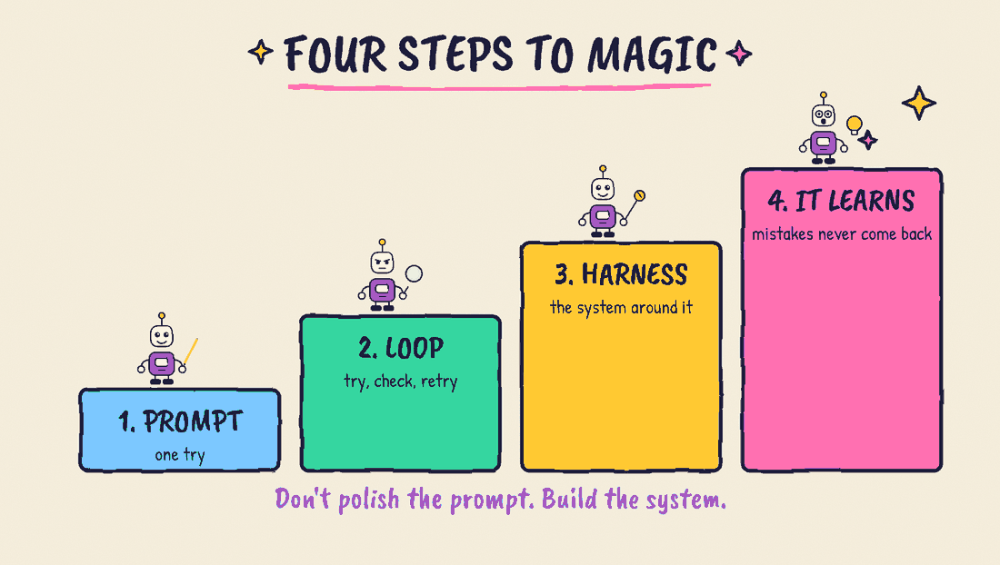
Where Dream Bot Team stands, honestly
- 1. Prompt: where every map starts, never where it stops.
/specturns a plain wish into a spec, and nothing after that depends on you typing again. - 2. Loop: strong on checks (build, read-back from the editor, scans, two reviewers). Growing on feedback: a failure should say what was expected, what was seen and what was already tried, and the same failure twice means stop and ask you.
- 3. Harness: strong. Every editor tool is mapped; the plan, notes and decisions are files; nothing is ever deleted; a mailbox separates the planner from the worker; the path from idea to delivery is already a graph with one human gate. Next: more work side by side, and gates sized by the price of undo (see below).
- 4. It learns: lessons are proposed, approved by you and kept. Next: each lesson says which step it fixes.
A new question changes one try. A better workshop changes every try.
2. Where it comes from: the Lean UX startup loop
Startups have a problem we know well: nobody knows yet what people really want. Over the years four ideas were stacked on top of each other to deal with that. Each one answers one question, and together they form a loop.
- Understand (Design Thinking). Start from a real person and a real pain, before any solution. Ask, watch, write down what hurts. Who is it for? What bothers them?
- Try small (Lean UX and Lean Startup). Treat every idea as a guess. Build the smallest thing that can prove it right or wrong (the minimum viable product, the MVP), put it in front of real people and look at what they do, not at what they say. Eric Ries called it build, measure, learn; Jeff Gothelf and Josh Seiden call it think, make, check. If the answer is "no", change direction (a pivot) instead of defending the idea.
- Short steps (Agile). Work in short rounds, so something usable always exists and each round is a little better than the last.
- Grow (Growth hacking). When it works, watch how people find it, try it, come back, support it and tell their friends (the "pirate metrics", AARRR), and improve those numbers one at a time.
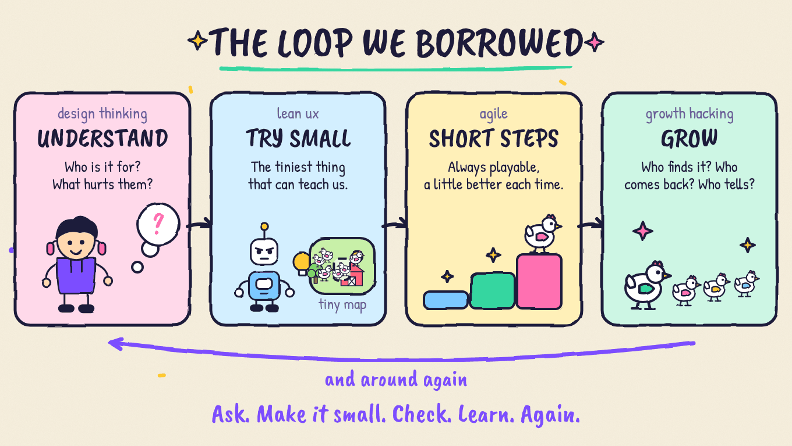
That is the loop. It is not a straight line: it goes around again, every time with something learned.
What we did with it
We did not copy a method. For four months we read, studied and compared other projects and methods, tried the ideas on real maps, measured what happened, threw away what did not work and adapted what did. Many pieces come from other people's good work; where we adapted something directly, the third-party notices say so. What is ours is the adaptation: the loop above, rebuilt for one very specific job, building a Fortnite map with AI and being able to trust it. Every step of the loop has a tool, a check and a place where you say yes. As far as we know, nothing else puts the whole loop in one place for UEFN maps.
3. What the kit gives you, from the idea to the MVP and beyond
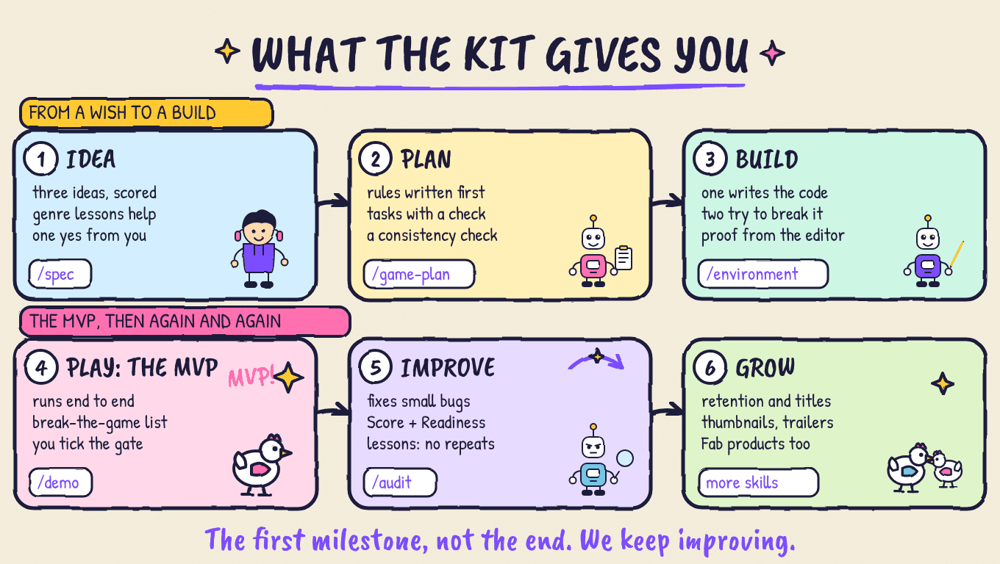
| Stage | What the kit does | What you do |
|---|---|---|
| 1. Idea (understand) | /spec proposes three ideas (or starts from yours), scores them, asks the minimum, writes the loop of the game in five lines and the measurable criteria. Genre lessons from earlier maps, and your second brain if you keep one, shape the questions. | Choose the idea, confirm the genre, one approval |
| 2. Plan (try small, on paper) | /game-plan writes the principles and the plan, /task-list cuts it into small tasks that each carry a check, /consistency finds contradictions before any code exists. | One approval |
| 3. Build (try small, for real) | One helper writes the code, two try to break it. Every editor tool is mapped and the recipes were proven on a live editor. /environment builds the scenery and lists what only a person can do. | Link the few things the tools cannot reach |
| 4. Play: the MVP (check) | /demo runs the whole path on a pilot game. The playtest checklist comes from your own spec, with a "Break the game" part (nobody in the round, a player who leaves, a tie, the last second). /delivery is the last gate. | Play one round, say what you saw, tick the gate yourself |
| 5. Improve (short steps, again and again) | /audit fixes small bugs alone and brings you the serious ones. The Score page compares the game with its own plan and ends in one honest number, Readiness. /kit-doctor checks the five needs of the project. Every mistake becomes a lesson you approve, and what worked goes into the second brain. | Decide on the serious findings, approve the lessons |
| 6. Grow | Skills for what comes after launch: analytics, retention and game design, competitors, titles and descriptions, thumbnails, update notes, trailers, a launch plan. The Stats page reads public data once the map is published. A Fab mode checks and documents products you sell. | Publish, and decide what to change next |
Steps 1 to 4 are the way to the MVP. Steps 5 and 6 are the loop going around again, as many times as the game deserves.
This is the first milestone, not the end. Today the kit takes an idea to a playable MVP and gives you what you need to keep improving it. We do not stop here: every map teaches the kit something, every release says what was really run on a live editor and what was only checked offline, and we keep improving it.
4. The whole idea in one picture
- You bring the dream, the choices and what only a person can do.
- The plan says what "done" means, written first.
- The team of 22 helpers does the work, one job each.
- The editor is the place where every tool is known and every trick was tried for real.
- Proof comes from the editor: built, read back, checked, played.
- Your yes: only you tick the box.
- Lessons are kept for the next map, and the next plan starts from them.
In one sentence: you say what "done" means, the team builds, the editor proves it, you say yes, and the kit remembers.
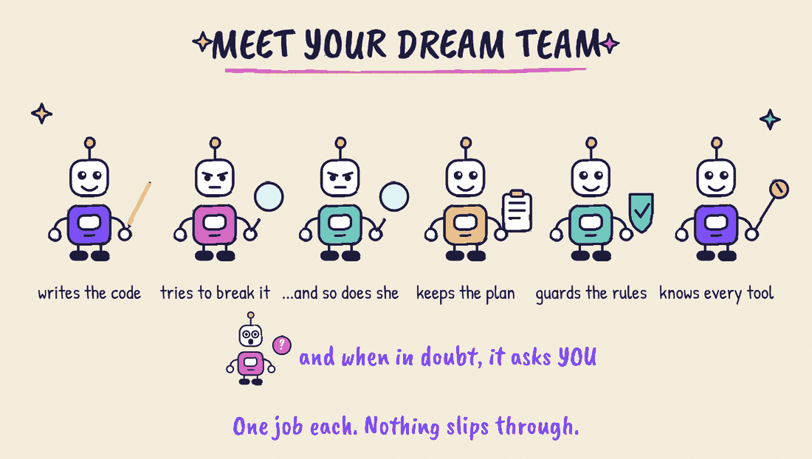
5. The choices, and why each one is simple
Every choice below removes a problem. It does not just manage it.
"Done" has to be shown, not said
A helper can say "finished" and be wrong. So nothing counts as done until the editor itself shows it: the code builds, the value is read back, the check finds nothing wrong. The team proposes. The editor decides.
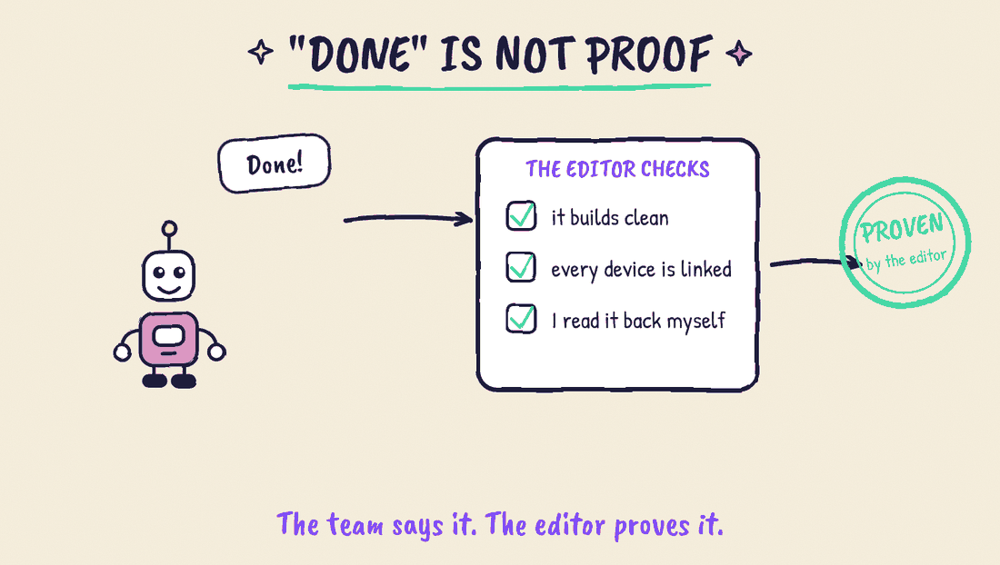
Whoever builds never checks
The helper that writes the work never reviews it. Two others try to find what is wrong with it. Checking is an honest attempt to break the work, not a friendly second look.
You stay in charge, only where it matters
The gate depends on the price of undo, not on how sure the helper feels. If a change can be undone in one click, it ships when the checks are green. If undoing it means cleaning up, it needs proof and a second opinion. If it cannot be undone at all (publishing, deleting), a person signs, and there is no score the helper can argue with. Reading is free. Changing is shown to you. Publishing needs your yes. Deleting never happens: things are parked in a safe folder, and you decide. You are the slowest and most valuable part of the system, so we put you only where a mistake cannot be taken back.
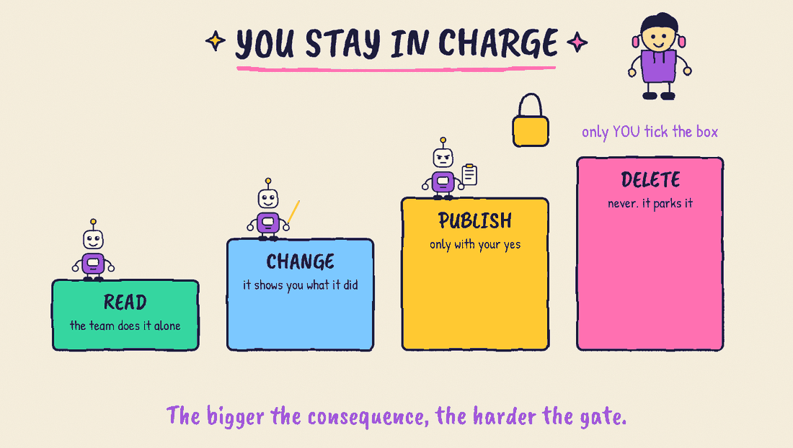
Everything is a file
The plan, the notes, the checklist, the decisions are plain text files. You can open every one. There is no hidden memory and nothing important lives only in a chat. What the team knows, you can read. What you tick, the team reads.
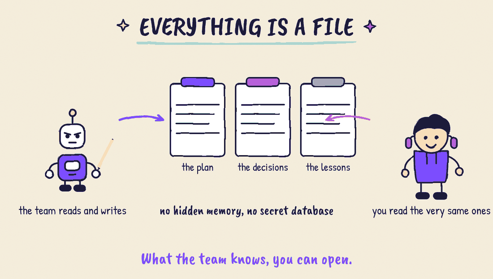
One mailbox between two places
The planner can sit far away. The worker sits next to the editor. Between them is a folder, like a mailbox: one side drops a letter, the other answers. It is the simplest thing that works across a network, a laptop and a phone.
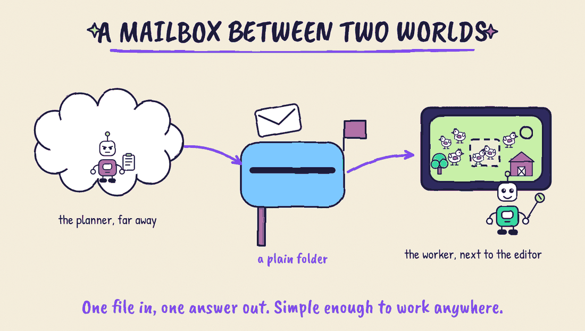
The same mistake never twice
When something goes wrong, the kit proposes a lesson. You approve it. It stays private by default. A corrected answer helps one run. A corrected system helps every run.
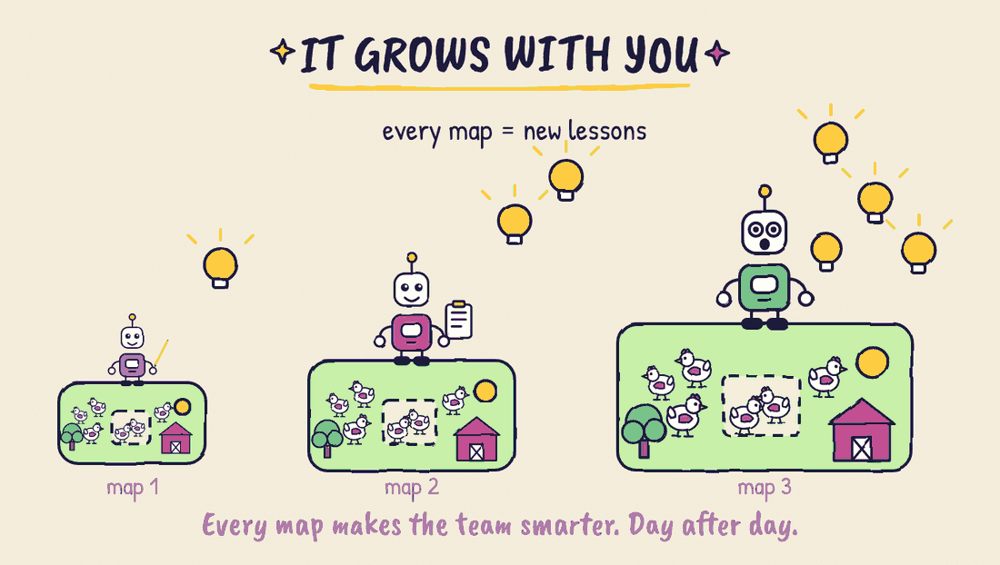
The second brain: where the kit keeps what it knows
Every new chat starts blank. The kit's answer is a second brain: one folder of plain text files, outside any project, that the helpers read and also write. The next session, and the next map, start where the last one stopped.
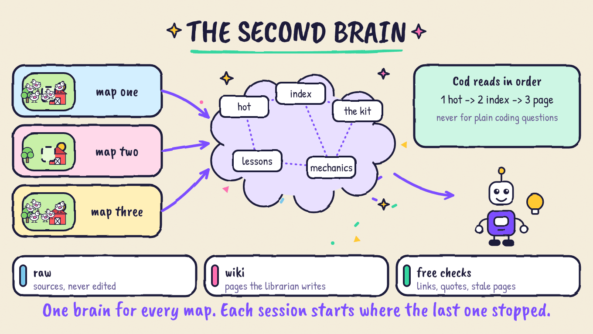
It holds what worked (a pickup, a round timer, a score panel in Verse), what did not (kept as counter-evidence), the lessons of every map and the kit's own knowledge, so the second brain Cod reads already knows how the kit works. A hook puts the short cache wiki/hot.md in front of the helpers at the start of a session, they read in a fixed order (hot, index, topic, page) and never for a plain coding question, and plain scripts that cost no tokens check every page: broken links, sources edited after they were ingested, and every quoted claim must exist word for word in its source. Those checks prove a page copies its source, not that the source is right, so disagreements are written down instead of smoothed over. It is off until you give it a folder, and the kit works without it. The full story, with the five steps to turn it on and the free checks, is in The second brain.
The screen is alive
A still screen cannot tell you if the system is working or stuck. So the screens pulse. Each helper lights up while it works, the arrows breathe, a finished step turns green by itself. You trust what you can see living. The pulse is cheap and gentle: for anyone who asks for less motion, everything that moves stops and only the light stays, and a switch in the header brings the movement back.
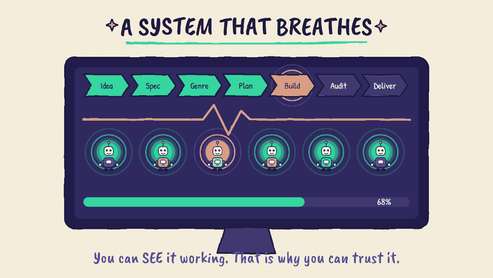
6. The way we work
We do not write a giant plan and build for months. We work in short loops on a real map, and let the map teach the kit.
- Run it on a real map. The farm map is our experiment.
- Watch where it hurts. If the owner cannot tell how to play, the game has a flaw. If the owner reads a word he does not understand, the kit has a flaw.
- Fix the workshop, not the symptom. The fix becomes a rule, a check or a lesson, so it cannot come back.
- Keep it small. What no longer earns its place goes away. The best workshop is the smallest one that closes the gap between what you meant and what was proven.
This is lean, one level higher. Lean Startup builds, measures and learns on the product. Here the same loop runs on the factory that builds the product: every map is an experiment on the workshop. From the Toyota line we keep the habit of stopping at the first defect and building quality in, instead of checking at the end. From the hacker world we keep the taste: a good fix is small, clear, and kills a whole family of problems.
A demo is the smallest honest proof: one clean run through every phase, with nothing left for you to repair.
7. What we are, and what we are not
Others took one slice of this idea and went deep: a layer that writes its own skills from real sessions, a method that measures before it simplifies a team of agents, a library of design taste turned into skills. Good work. We learned from all of it.
Dream Bot Team is the whole loop, in one place, with a person in the loop: agree what done means, build, prove, ask you, learn. For Fortnite maps.
We are also honest about the limits. It does not yet score itself on a fixed set of tests. Learning needs your approval. Some editor settings cannot be reached by the tools, so a person sets them by hand. Every release says what was really run on a live editor and what was only checked offline.
8. Where to go next
- Read the story: the manifesto.
- Try it in ten minutes: quick start.
- From idea to a playable game: the walk-through.
- Watch it work: the console.
- How it learns: skills and lessons.
- Why a rule exists: decision records.
This is the first milestone, not the end. The kit grows with every map, and so do we. We keep improving it.
The goal was never a system that does not need you. It is a system that needs you once, at the right place.
The model brings the intelligence. The workshop brings the structure. Together they build maps you can trust.